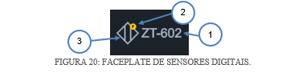
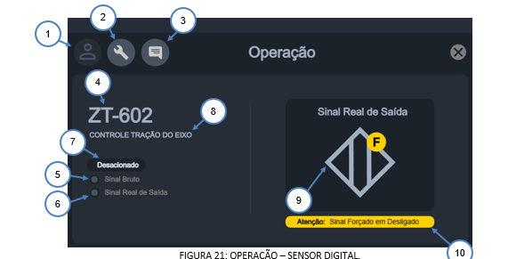
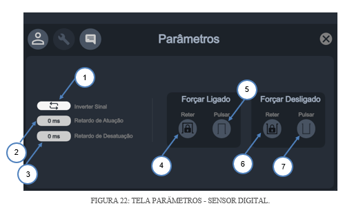
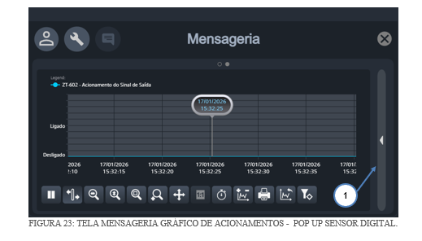
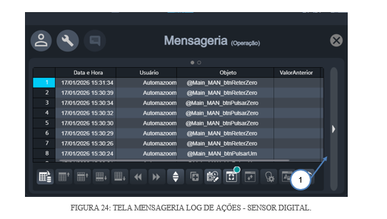

3.1.8 FACEPLATE
Cada sensor digital possui um painel com informações básicas sobre seu status. Ao clicar no painel, é possível acessar a tela de operação do equipamento.

FIGURA 20: FACEPLATE DE SENSORES DIGITAIS.
ÍCONES FACEPLATE - SENSOR DIGITAL
| Ícone | Descrição |
|---|---|
| 1 | Nome do equipamento. |
| 2 | Sinal forçado. |
| 3 | Indicador de status do sensor. |
| Sensor ligado ou desligado. |
TABELA 20: ÍCONES FACEPLATE SENSOR DIGITAL.
3.1.9 OPERAÇÃO

FIGURA 21: OPERAÇÃO – SENSOR DIGITAL.
Esta tela apresenta informações do sensor digital, conforme sua parametrização.
ÍCONES TELA DE OPERAÇÃO - SENSOR DIGITAL
| Ícone | Descrição |
|---|---|
| 1 | Abre a aba de operação. |
| 2 | Abre a aba de parâmetros. |
| 3 | Abre a aba de mensageria. |
| 4 | Nome do sensor. |
| 5 | Leitura do sensor. |
| 6 | Valor do sinal convencional. |
| 7 | Status do sensor. |
| 8 | Descrição do sensor. |
| 9 | Indicador de sensor ligado ou desligado. |
| 10 | Alerta de sinal forçado com descrição. |
TABELA 21: ÍCONES DE OPERAÇÃO SENSOR DIGITAL.
3.1.10 PARÂMETROS
Tela utilizada para configurar o sensor digital, permitindo inverter o sinal e definir tempos de retardo para atuação e desatuação. Essas configurações são permitidas apenas para usuários de manutenção ou administração.

FIGURA 22: TELA PARÂMETROS - SENSOR DIGITAL.
ÍCONES TELA DE PARÂMETROS - SENSOR DIGITAL
| Ícone | Descrição |
|---|---|
| 1 | Inverte o sinal do sensor. |
| 2 | Define o tempo de retardo para atuação. |
| 3 | Define o tempo de retardo para desatuação. |
| 4 | Força o sinal do sensor para ligado. |
| 5 | Mantém o sinal ligado enquanto o botão estiver pressionado. |
| 6 | Força o sinal do sensor para desligado. |
| 7 | Mantém o sinal desligado enquanto o botão estiver pressionado. |
TABELA 22: ÍCONES TELA DE PARÂMETROS - SENSOR DIGITAL.
3.1.11 MENSAGERIA
A aba de mensageria possui duas guias: uma com o histórico de ações dos usuários e outra com um gráfico que apresenta os acionamentos e desacionamentos do sensor durante a última hora.
3.1.12 GRÁFICO ACIONAMENTOS

FIGURA 23: TELA MENSAGERIA GRÁFICO DE ACIONAMENTOS - POP UP SENSOR DIGITAL.
ÍCONES TELA MENSAGERIA GRÁFICO DE ACIONAMENTOS - SENSOR DIGITAL
| Ícone | Descrição |
|---|---|
| 1 | Retorna para a tela anterior (log de ações). |
TABELA 23: ÍCONES TELA MENSAGERIA GRÁFICO DE ACIONAMENTOS.
3.1.13 LOG DE AÇÕES

FIGURA 24: TELA MENSAGERIA LOG DE AÇÕES - SENSOR DIGITAL.
ÍCONES TELA MENSAGERIA LOG DE AÇÕES - SENSOR DIGITAL
| Ícone | Descrição |
|---|---|
| 1 | Avança para a próxima tela (gráfico de acionamentos). |
TABELA 24: ÍCONES TELA MENSAGERIA LOG DE AÇÕES.